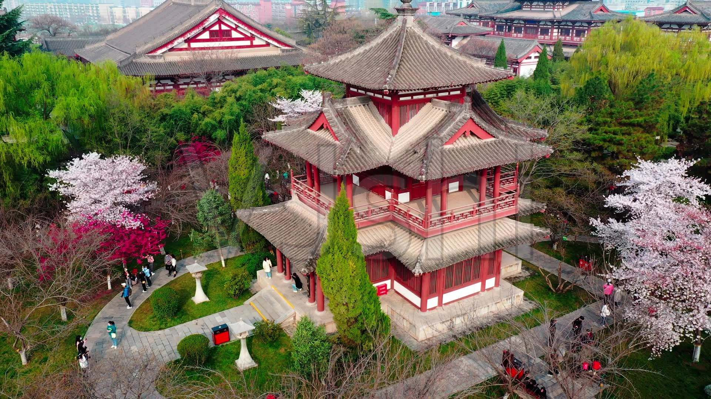

-
大雁塔
大雁塔作为现存最早、规模最大的唐代四方楼阁式砖塔，是佛塔这种古印度佛寺的建筑形式随佛教传入中原地区，并融入华夏文化的典型物证，是凝聚了中国古代劳动人民智慧结晶的标志性建筑。
-
西安鼓楼
西安鼓楼为一座歇山顶、重檐三滴水的高台建筑，通高34米，楼上原有报时巨鼓一面。楼基座以石条和青砖砌成，平面呈长方形，东西长52．6米、南北宽38米、高7．7米，南、北面正中辟有高、宽均6米的券洞门通道。
-
大唐宗圣观记碑
《大唐宗圣观记碑》刻立于唐高祖武德九年(626年)二月十五日，在陕西省西安市周至县。高365cm，宽112cm，螭首龟趺，碑文23行，行60字，额题楷书“大唐宗圣观记”，阳刻，2行6字。欧阳询撰序并隶书，陈叔达撰铭。
- 
青龙寺
青龙寺建于隋开皇二年（公元582年），原名灵感寺，唐景云二年（公元711年）改名青龙寺。青龙寺是唐代西安著名的佛寺之一，也是当时著名的风景区